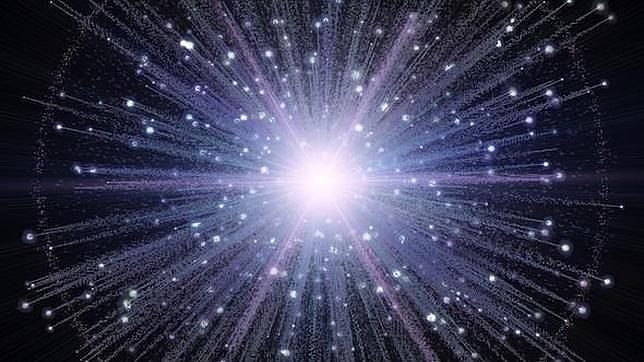

EL UNIVERSO Y LAS GALAXIAS

El universo es la totalidad del espacio y del tiempo, de todas las formas de la materia, la energía y el impulso, las leyes y constantes físicas que las gobiernan. Sin embargo, el término también se utiliza en sentidos contextuales ligeramente diferentes y alude a conceptos como cosmos, mundo o naturaleza.
Observaciones astronómicas indican que el universo tiene una edad de 13,73 ± 0,12 millardos de años (entre 13 730 y 13 810 millones de años) y por lo menos 93 000 millones de años luz de extensión.2 El evento que dio inicio al universo se denomina Big Bang. Se denomina Big-Bang a la singularidad que creó el universo. Después del Big Bang, el universo comenzó a expandirse para llegar a su condición actual, y continúa haciéndolo.
Debido a que, según la teoría de la relatividad especial, la materia no puede moverse a una velocidad superior a la velocidad de la luz, puede parecer paradójico que dos objetos del universo puedan haberse separado 93 mil millones de años luz en un tiempo de únicamente 13 mil millones de años; sin embargo, esta separación no entra en conflicto con la teoría de la relatividad general, ya que ésta sólo afecta al movimiento en el espacio, pero no al espacio mismo, que puede extenderse a un ritmo superior, no limitado por la velocidad de la luz. Por lo tanto, dos galaxias pueden separarse una de la otra más rápidamente que la velocidad de la luz si es el espacio entre ellas el que se dilata.
Mediciones sobre la distribución espacial y el desplazamiento hacia el rojo (redshift) de galaxias distantes, la radiación cósmica de fondo de microondas, y los porcentajes relativos de los elementos químicos más ligeros, apoyan la teoría de la expansión del espacio, y más en general, la teoría del Big Bang, que propone que el universo en sí se creó en un momento específico en el pasado.
Observaciones recientes han demostrado que esta expansión se está acelerando, y que la mayor parte de la materia y la energía en el universo son las denominadas materia oscura y energía oscura, la materia ordinaria (barionica), solo representaría algo más del 5 % del total3 (véanse materia oscura y energía oscura).
Los experimentos sugieren que el universo se ha regido por las mismas leyes físicas, constantes a lo largo de su extensión e historia. Es homogéneo e isotrópico. La fuerza dominante en distancias cósmicas es la gravedad, y la relatividad general es actualmente la teoría más exacta para describirla. Las otras tres fuerzas fundamentales, y las partículas en las que actúan, son descritas por el Modelo Estándar. El universo tiene por lo menos tres dimensiones de espacio y una de tiempo, aunque experimentalmente no se pueden descartar dimensiones adicionales muy pequeñas. El espacio-tiempo parece estar conectado de forma sencilla, y el espacio tiene una curvatura media muy pequeña o incluso nula, de manera que la geometría euclidiana es, como norma general, exacta en todo el universo.
La ciencia modeliza el universo como un sistema cerrado que contiene energía y materia adscritas al espacio-tiempo y que se rige fundamentalmente por principios causales.
Basándose en observaciones del universo observable, los físicos intentan describir el continuo espacio-tiempo en que nos encontramos, junto con toda la materia y energía existentes en él. Su estudio, en las mayores escalas, es el objeto de la cosmología, disciplina basada en la astronomía y la física, en la cual se describen todos los aspectos de este universo con sus fenómenos.
La teoría actualmente más aceptada sobre la formación del universo, fue teorizada por el canónigo belga Lemaître, a partir de las ecuaciones de Albert Einstein. Lemaitre concluyó (en oposición a lo que pensaba Einstein), que el universo no era estacionario, que el universo tenía un origen. Es el modelo del Big Bang, que describe la expansión del espacio-tiempo a partir de una singularidad espaciotemporal. El universo experimentó un rápido periodo de inflación cósmica que arrasó todas las irregularidades iniciales. A partir de entonces el universo se expandió y se convirtió en estable, más frío y menos denso. Las variaciones menores en la distribución de la masa dieron como resultado la segregación fractal en porciones, que se encuentran en el universo actual como cúmulos de galaxias.
En cuanto a su destino final, las pruebas actuales parecen apoyar las teorías de la expansión permanente del universo (Big Freeze ó Big Rip, Gran Desgarro), que nos indica que la expansión misma del espacio, provocará que llegará un punto en que los átomos mismos se separarán en partículas subatómicas. Otros futuros posibles que se barajaron, especulaban que la materia oscura podría ejercer la fuerza de gravedad suficiente para detener la expansión y hacer que toda la materia se comprima nuevamente; algo a lo que los científicos denominan el Big Crunch o la Gran Implosión, pero las últimas observaciones van en la dirección del gran desgarro.

LA GALAXIA
Las galaxias son acumulaciones enormes de estrellas, gases y polvo.
En el Universo hay centenares de miles de millones de galaxias. Cada una puede estar formada por centenares de miles de millones de estrellas y otros astros.
En el centro de las galaxias es donde se concentran más estrellas.
Todos los cuerpos que forman parte de una galaxia se mueven a causa de la atracción de los otros debida a la fuerza de la gravedad. En general hay, además, un movimiento mucho más amplio que hace que todo junto gire alrededor del centro.
Las primeras galaxias se empezaron a formar 1.000 millones de años después del Big-Bang. Las estrellas que las forman tienen un nacimiento, una vida y una muerte.
El Sol, por ejemplo, es una estrella que se formó por acumulación de materiales que provenían de estrellas anteriores, muertas.
Muchos nucleos de galaxias emiten una fuerte radiación, cosa que indica la probable presencia de un agujero negro.
Los movimientos de las galaxias provocan, a veces, choques violentos. Pero, en general, las galaxias se alejan las unas de las otras, como puntos dibujados sobre la superficie de un globo que se infla.
Algunas galaxias tienen un perfil globular completo con un núcleo brillante. Estas galaxias, llamadas elípticas, contienen una gran población de estrellas viejas, normalmente poco gas y polvo, y algunas estrellas de nueva formación. Las galaxias elípticas tienen gran variedad de tamaños, desde gigantes a enanas. En la foto, la elíptica Galaxia del Sombrero.
Hubble simbolizó las galaxias elípticas con la letra E y las subdividió en ocho clases, desde la E0, prácticamente esféricas, hasta la E7, usiformes. En las galaxias elípticas la concentración de estrellas va disminuyendo desde el núcleo, que es pequeño y muy brillante, hacia sus bordes.